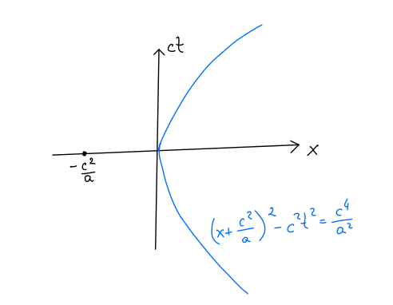
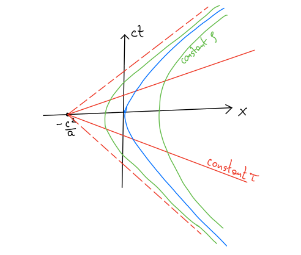
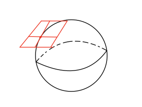
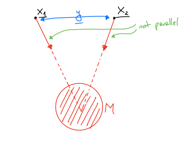
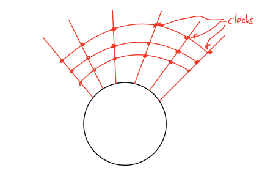
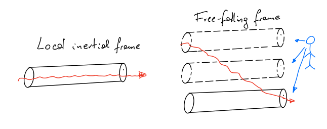
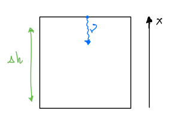
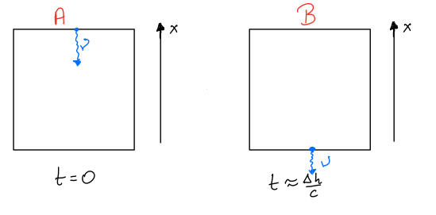

2. Week 2¶
2.1. Rediscovering the Forces of Nature¶
In the previous lecture we introduced a reparametrisation invariant action for a free particle in Special Relativity:
Since this action is reparametrisation invariant, we can choose how to parametrise any physical path using the time coordinate \(t\) of some inertial observer: \(\lambda=t\). Then we can re-write the above action as
where \(\dot{\vec{x}}=\frac{d\vec{x}}{dt}\). By doing this we lost explicit reparametrisation invariance but it will allow us to take the first step towards a reparametrisation invariant action for an interacting particle.
2.1.1. Electrodynamics¶
So far, we considered a free relativistic particle and we would like to add some extra terms in the action that would describe a force acting on this particle. In the non-relativistic context we would just add a potential term:
We want to write a relativistic action that depends on \(x^\mu\), is Lorentz invariant, and also is reparametrisation invariant. It is clear that this restricts our options on the shape of the potential.
Let us start by modifying the action (2.1) by adding a potential term, as we would do in the non-relativistic case:
and ask if this can come from an action that is reparametrisation invariant? We need to find a potential function that scales in such a way that after change of a parametrisation, the scale compensates the one coming from the \(d\lambda\) term. One option would be to add a linear term in \( \frac{dx^\mu}{d\lambda}\). Then, to preserve the Lorentz invariance, we need to contract it with something. This motivates us to introduce a function \(A_\mu(x)\) to write:
where \(q\) is a constant that determines the strength of coupling of our particle to the new term \(A_\mu(x)\). It is easy to check that this action is reparametrisation invariant.
To understand the physics of this action, we again choose the parametrisation to come from an inertial observer: \(\lambda=t\) in some inertial coordinate system. If we write \(A_\mu=(\frac{\phi(x)}{c},\vec{A}(x))\) we can write our action as:
This is nothing else than the action of a particle with electric charge \(q\) moving in the background of an electromagnetic field described by potentials \(\phi(x)\) and \(\vec{A}(x)\). We therefore rediscovered the relativistic electrodynamics.
2.1.2. Gravity¶
To discover gravity we need to make a different modification of the action and consider the following generalisation:
If we now focus on the non-relativistic limit when \(\frac{|\vec{\dot{x}}|}{c}\ll 1\) and \(\frac{2\phi(\vec{x})}{c^2}\ll 1\), then we can Taylor expand this action to get
The first term is a constant giving the rest mass energy of the particle, while the remaining two terms describe a non-relativistic particle moving in the potential \(m\phi(\vec{x})\). Since this potential is proportional to the mass of the particle we identify the force associate to it as gravity.
There is a subtle but important detail in the derivation above: notice that the same mass \(m\) appears both in front of the kinetic term and the potential term and from the point of view of the Newtonian physics there is no reason why these two coefficients should be the same. However, since we started from a relativistic action, they come from the same coefficient sitting in front of the integral in the action. In Newtonian physics, we could call the mass in the kinetic term the inertial mass \(m_I\), while the mass in front of the potential term, the gravitational mass \(m_G\). The fact that in relativistic physics they are naturally equal has been confirmed in classical physics long time ago to high precision (around \(10^{-13}\)) and it is known as the (weak) equivalence principle.
Equivalence principle
Now we would like to rewrite the action (2.2) in a manifestly relativistic and reparametrisation invariant way. First, we observe that the \(1\) in (2.2) comes from the square-root \(\sqrt{1+\ldots}\) and therefore from the \(\eta_{00}\) component of the Minkowski space metric. To get the term \(1+\frac{2\phi(\vec{x})}{c^2}\), we can promote this component to be coordinate dependent. More generally, we can promote all entries of \(\eta_{\mu\nu}\) to be functions on the spacetime we call \(g_{\mu\nu}(x)\), and therefore we introduce a curved spacetime metric
Then a reparametrisation invariant action takes the form:
This action describes a particle moving in curved spacetime.
2.2. Equivalence principle¶
A consequence of the weak equivalence principle \(m_I=m_G\) is that it is not possible to tell the difference between a constant acceleration and a constant gravitational field. In particular:
if an observer is experiencing a constant acceleration, it is not possible to say whether the observer is at rest in a gravitational field or is undergoing a constant acceleration,
if an observer does not experience any forces, it is not possible to distinguish the situation where the observer is in free-fall in a gravitational field or is floating in space with no sources of force acting on it.
2.2.1. Uniformly accelerating observer¶
We want to focus first on the former case and find a set of coordinates that are adapted to a uniformly accelerating observer. We will view things from the point of view of an inertial frame with coordinates \((ct,x,y,z)\). We consider an object experiencing a constant acceleration \(a\) in direction \(x\). We want to describe this motion from the point of view of the inertial observer.
Recall from your Special Relativity course that if we have two consecutive boosts, \(v_1\) followed by \(v_2\), then the resulting velocity is
This can be described in a simpler way by introducing the rapidity \(\phi\) that is related to the velocity by
Rapidities are useful because they add linearly under successive boosts: if \(v_1=c\tanh \phi_1\) and \(v_2=c\tanh \phi_2\) then \(\frac{v_1+v_2}{1+\frac{v_1v_2}{c^2}}=c\tanh (\phi_1+\phi_2)\). Moreover, a constant acceleration means rapidity increases linearly in time \(\tau\), where \(\tau\) is the accelerating observer’s time. Then we have
We now want to parametrise the motion of the accelerating observer in the inertial coordinate system. To this end we find the relation between the coordinates \(t\) and \(x\) and the accelerating observer’s time \(\tau\). We look for a trajectory that passes the origin of the inertial frame, and we synchronise clocks of two observers by choosing \(t=0\) when \(\tau=0\). This leads us to
This implies
The resulting trajectory is a hyperbola
This trajectory is depicted in the figure below
{kind=link}
We notice that the trajectory asymptotes to the straight lines \(ct=\pm (x+c^2/a)\), indicating that the velocity of the accelerating observer does not exceed the speed of light.
Now we would like to introduce a natural coordinate system from the point of view of the accelerating observer. For the time coordinate, we can naturally take the proper time \(\tau\) of this observer, but this is defined only on the observer’s worldline and we need to extend this definition to cover all four-dimensional space.
There exists a natural set of coordinates in this case. First, if we draw straight lines from any point on the worldline labelled by the proper time \(\tau\) to the point \((0,-\frac{c^2}{a})\), we can declare all the points on this line to have the same values of \(\tau\). Then we can find a Lorentz transformation that maps the \(x\)-axis to a line of constant \(\tau\) and use this Lorentz transformation to define the spatial coordinate \(\rho\). The remaining two coordinates \(y\) and \(z\) are shared for both observers. This leads us to the following relation:
We illustrate this coordinate system in the figure below.
{kind=link}
These coordinates do not cover all of the Minkowski space but only the quadrant in the figure. This comes from the fact that not all signals from all regions of the space-time can be exchanged with the accelerating observer. This is closely relates to the idea of a horizon in General Relativity.
Finally, we look at the metric experienced by the accelerating observer. We simply substitute the relation between coordinates \((t,x)\) and \((\tau,\rho)\) into the Minkowski space metric to find:
This coordinate system is known as Kottler-Moeller coordinates and they are closely related to a better-known Rindler coordinates.
Importantly, the temporal component of this metric \(g_{00}\) is
and we see that the accelerated observer feels an effective gravitational potential
This is another manifestation of the weak equivalence principle that we discussed above: the acceleration is indistinguishable from a linearly increasing gravitational field, corresponding to a constant gravitational force.
2.2.2. Local inertial frames¶
Let us now discuss the second case, where we have an observer in free fall in a gravitational field. If the observer is trapped in a (free-falling) rocket without windows, then they are not able to distinguish their situation from the one when they travel in empty space without any force acting on them. Now importantly, the results of all measurements done inside the rocket will be consistent with special relativity because all objects inside are experiencing exactly the same acceleration (provided that the rocket is small). Therefore, the observer inside the rocket is able to define an inertial frame. From the point of view of the external observer at infinity, this frame is clearly not inertial and it changes from one event to another. This leads us however to the definition of a local inertial frame and the strong version of the equivalence principle:
Strong equivalence principle
Freely-falling (not-rotating) frames are locally inertial, i.e. all physical laws locally agree with Special Relativity. Such frames are called local inertial frames.
2.2.2.1. Curved spacetime¶
The notion of local inertial frame can be intuitively understood in the following example: imagine the curved surface of a sphere and the tangent plane to it at some point.
{kind=link}
In a small neighbourhood of the point where the plane touches the sphere, the sphere looks flat. But as you move away from tha point, the effects of curvature become important. In General Relativity, a local inertial frame can be thought of as the tangent space (locally) to some curved spacetime.
2.3. Tidal forces¶
In the previous section we said that constant gravitational force cannot be distinguished from a constant acceleration. However, if we have a changing, non-uniform gravitational field with potential \(\phi(\vec{x})\), then there will be tidal forces and we will be able to distinguish the two scenarios if we perform a non-local experinment. The following discussion allows us to quantify what we mean by the word ‘local’ when we define local inertial frames.
Consider the field due to a mass (e.g. a planet) at two nearby points \(\vec{x}_1\) and \(\vec{x}_2\):
{kind=link}
The force vectors are not parallel and objects will have a relative acceleration (towards each other). Therefore, in a freely falling frame, the free particles will seem to accelerate towards each other.
More generally: if we have two nearby objects at \(\vec{x}_1=\vec{x}(t)\) and \(\vec{x}_2=\vec{x}(t)+\vec{y}(t)\), then both satisfy \(\ddot{\vec{x}}=-\vec{\nabla}\phi\), namely \(\ddot{\vec{x}}_1=-\vec{\nabla}\phi\Big|_{\vec{x}_1}\) and \(\ddot{\vec{x}}_2=-\vec{\nabla}\phi\Big|_{\vec{x}_2}\). This implies that
This means that roughly \(\ddot{y}_i=-(\partial_j\partial_i\phi)y^j\), so \(\ddot{y}_i\), the relative acceleration, is small if \(y\) is small. But as the separation \(\vec{y}\) grows, the relative acceleration becomes more significant (provided \(\partial_i\partial_j\phi\neq 0\)). In General Relativity, we think of gravity as beeing locally indistinguishable from accelerating frame:
Important
Locally = ignoring tidal forces
2.4. Consequences of the equivalence principle¶
2.4.1. Static rigid lattices¶
Let us first introduce a particular set of observers that will allow us to talk about events in presence of gravity. Let us imagine that we have a lattice of rods with clocks attached to them.
{kind=link}
Say that clocks can send light signals back and forth between rods and record when they are sent and when they arrive. Consider a round trip where a signal is sent from clock A to clock B and then back to clock A.
if round trip times do not depend on when the signals are sent then the spacetime is called stationary.
if round trip times around closed loops also do not depend on the direction around the loop then the spacetime is static and the lattice of rods is called rigid.
A rigid lattice in a static spacetime defines a non-inertial frame in which the lattice is not moving (for example, a set of chairs on the surface of the Earth forms a rigid lattice).
Spacetimes that are stationary but not static can arise around for example rotating objects. If say a planet is rotating with constant velocity then the round trip measurements will not depend on the initial time of our measurement, but it might depend on the direction in which we send the signal (aligned or anti-aligned with the rotation of the planet).
2.4.2. Light is deflected by gravity¶
Consider shining light along a freely-falling tube. In the local inertial frame attached to the tube, light passes through the tube as in an inertial frame in Special Relativity. But in the rigid lattice frame, the tube falls downward and therefore also the light needs to follow its trajectory. This means that the light ray must be deflected downwards by gravity!
{kind=link}
2.4.3. Gravitational time dilation¶
We have already observed that a weak gravitational field changes the temporal component of the metric to be:
Let us assume that \(\phi(x)\) is such that \(\phi(x)=\phi(|\vec{x}|)=\phi(r)<0\) and \(\phi(r)\to 0\) when \(r\to \infty\). This means that the observer sitting at a fixed distance \(r\) from the gravity source will measure a time intervals
Therefore, if an asymptotic observer at \(r\to \infty\) measures time \(t\) then the observer at distance \(r\) will measure time
which means that time goes slower in the presence of a massive, gravitational object.
2.4.4. Gravitational red-shift¶
Consider a photon moving down towards Earth. At a particular instance, the photon passes through the roof of a freely falling cabin (i.e. local inertial frame) which is stationary with respect to the rigid lattice at that instant. Say that this is the time \(t=0\) according to the local inertial frame observer.
{kind=link}
We assume that the cabin has the height \(\Delta h\) and the photon has frequency \(\nu\) in the local inertial frame. Local inertial observer just sees Special Relativity.
{kind=link}
This event is also observed by an observer attached to the rigid lattice. At \(t=0\), the cabin is at rest with respect to lattice, which implies that observer also sees photon frequency \(\nu\). At event B, the cabin has velocity downwards:
In the local inertial frame, the lattice observer at B is moving upwards towards the photon with velocity \(v\). Then the lattice observer sees a Doppler-shifted frequency:
Since we have \(g=\frac{d\phi}{dx}\), then \(\Delta \phi=g\Delta h\), and finally
where \(\nu_0\) is the frequency at potential \(\phi_0\).
Important point
The frequency shift is not due to anything happening to the photon as it falls. It is due to the clocks of the observer running at different speeds. The fixed observer at B is moving with respect to the local inertial frame of the cabin, so their clock appears to run slow in the local inertial frame (standard special relativity Doppler shift).
As an example, let us take \(\phi(r)=-\frac{GM}{r}\). Then
This means that the observed frequency is higher than the frequency in the local inertial frame. If we reverted the situation and send a light ray upwards then the frequency observed by an observer far away from the gravity source would measure a lower frequency than the one sent. This is a red-shift associated to gravitational fields.